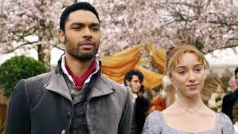

En la primera temporada se desarrolló el amor de Daphne Bridgerton (Phoebe Dynevor) y Simon Basset (Regé-Jean Page).
La querida, dulce e ingenua Daphne (interpretada por Phoebe Harriet Dynevor). Es integrante de una familia adinerada que se integra a la sociedad con soltura (según la reina) y está desesperada por casarse. Siente un sentido del deber y un propósito en esta misión, y nada la detendrá para encontrar a su media naranja, ni siquiera su incompetente hermano Antonio. Daphne se ve envuelta en una mala situación por culpa de Antonio y debe volver a ser una pareja atractiva para un apuesto pretendiente, y ahí es donde entra Simón.
Daphne fue criada como la mayoría de las mujeres de la alta sociedad en la época de la Regencia en Inglaterra: le enseñan a ser una dama recatada y correcta, pero no le dan información real sobre la vida. Si bien puede haber sido preparada para el cortejo y la búsqueda de un esposo, está dolorosamente mal preparada para conocer o manejar una relación romántica cercana. Al menos Daphne se defiende cuando se da cuenta de que la han tratado injustamente, y mientras juega para conseguir a su esposo, también desafía discretamente los límites para defender lo que merece.
La repentina retirada fuera de la casa de té Mientras disfruta de la artimaña de fingir un cortejo, Simon es puesto en su lugar por Lady Danbury, quien lo regaña por engañar a Daphne si no le va a proponer matrimonio, sobre todo porque el príncipe Friedrich ha mostrado claramente interés en ella. Tiene razón, aunque desconoce el alcance de este falso cortejo, y Simon comprende que debe terminar con Daphne.
mas información aqui